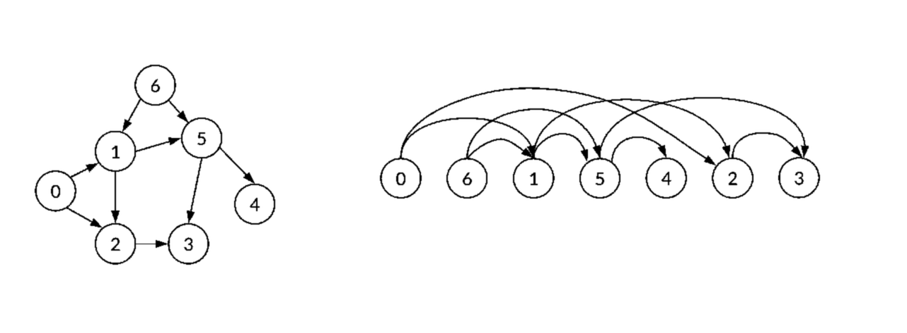

MAB 368, Algoritmos e Grafos - 2019/2
Ordenação Topológica
Descrição
Dado um digrafo, queremos encontrar uma permutação de seus vértices, tal que se uv ∈ E(G), então u vem antes de V na permutação

Um grafo e uma possível ordenação topológica
A Ideia do Algoritmo
A ideia do algoritmo é baseada no teorema provado em sala de aula:
G tem uma Ordenação Topológica se, e somente se G não tem ciclo
Algoritmo: Ordenacao_Topologica
Entrada: Digrafo Acíclico G = (V, E).
Saída: v1v2v3...vn, uma OT de G.
- g ← Grau_de_Entrada(G)
- F ← ∅
- Para cada v ∈ V(G):
- se g(v) = 0, então F ← F ∪ {v}
- Para i ← 1 até n:
- Seja f ∈ F, F ← F\{f}
- vi ← f
- Para cada w ∈ Adj+(f):
- g(w) ← g(w) - 1
- se g(w) = 0, então:
- F ← F ∪ {w}
Complexidade
Complexidade de Espaço: O(n+m)
Complexidade de Tempo: O(n+m)